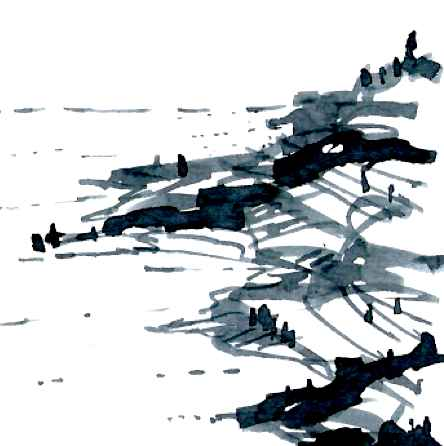
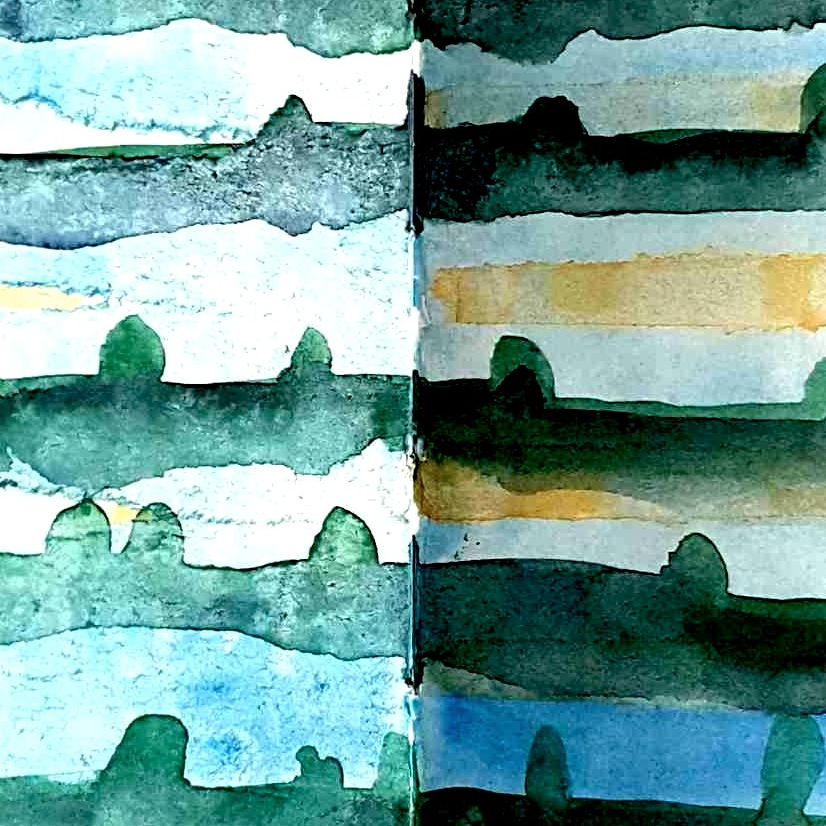
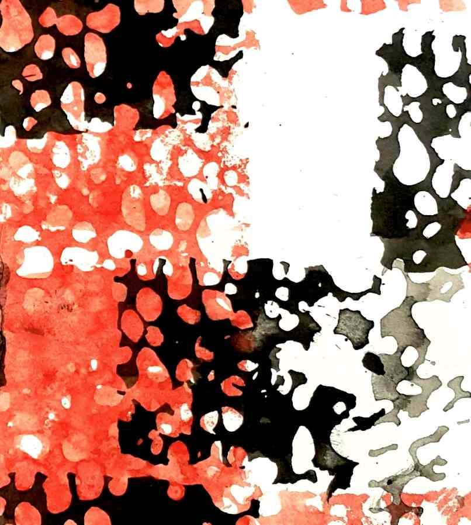

O meni | About
Krajine. Vedno tu. | Landscapes. Always on my mind.
-
dr. Tanja Simonič Korošak
krajinska arhitektka & direktorica @ Studio TSK: Oblikovanje krajine Tanja Simonič Korošak s.p. ★ doktorica & magistra krajinske arhitekture ★ študirala v Sloveniji, v Veliki Britaniji & na Švedskem ★ pooblaščena krajinska arhitektka (ZAPS 1623) ★ konservatorka (MK) ★ izdelujem načrte krajinske arhitekture ter sodelujem na natečajih samostojno in v različnih skupinah ★ prostoročno skiciram in izvajam delavnice krajinskega in urbanega skiciranja ★ predavam na različnih inštitucijah doma in v tujini ★ publiciram ★ oblikovalsko in raziskovalno me zanimajo praksa, teorija & zgodovina krajinskega oblikovanja, načrtovalsko mišljenje & prostoročna krajinska skica ★ živim in delam v Mariboru ||| landscape architect, owner & CEO @ Studio TSK in Maribor, Slovenia ★ PhD & Masters degree in landscape architecture & certificate in landscape studies ★ study: Slovenia, UK and Sweden ★ a practicing licensed landscape architect ★ a licence in cultural heritage conservation ★ preparing a diverse range of landscape architecture masterplans, plans, idea designs, collaborating in design competitions, also in different design teams ★ freehand landscape and urban sketching ★ organising workshops in freehand landscape and urban sketching and drawing ★ lecturing at several institutions home and abroad ★ publishing ★ design and research interests: landscape design practice and theory, history of landscape design, design thinking, freehand sketching ★ living and working in Maribor, Slovenia, EU.
-

izobrazba in licence | education and licenses
★ 2016 licensed conservator @ Ministry of culture, Slovenia ★ 2012 licensed landscape architect @ Chamber of architecture and spatial planning of Slovenia ★ 2002 PhD in landscape architecture @ University of Ljubljana, Slovenia ★ 1999 PhD study @ Swedish University of agriculture Lund, Sweden ★ 1998 MA in landscape architecture @ University of Ljubljana Slovenia ★ 1995 BSc in biology @ University of Ljubljana, Slovenia ★ 1992 – 1993 Certificate in landscape studies @ University of Sheffield, United Kingdom ★ 1990 –1992 undergraduate study in landscape architecture @ University of Ljubljana, Slovenia ★ 1987 - 1991 undergraduate study in biology @ University of Ljubljana, Slovenia
-

zaposlitev | work
★ since 2008: freelance landscape architect & CEO & owner @ STUDIO TSK Maribor ★ 2017⁄18: lecturer @ BOKU University of Natural Resources and Life sciences, Institute of landscape architecture, Vienna ★ since 2015: assistant professor @ University of Maribor, Department of architecture ★ 2006-2015 lecturer & assistant @ University of Maribor, Department of architecture ★ since 2015: assistant professor @ ERUDIO College for sustainable tourism ljubljana ★ 2011-2015: lecturer @ ERUDIO College for sustainable tourism Ljubljana ★ 2005 - 2013: lecturer @ Biotechnical school Rakičan, Murska Sobota ★ 1995– 2006: teaching assistant & young researcher @ University of Ljubljana, Department of landscape architecture
-

projekti | projects
★ 100+ landscape and urban design projects ★ 20+ landscape and urban design competitions (9 awards and several honourable mentions) ★ 30+ collaborations with different architects, landscape architects and other professionals ★ 6 group landscape projects exhibitions and 15+ sketchbook exhibitions ★ 2 blogs: tsketching.wordpress.com in 850mb.wordpress.com ★ 30 + lectures for diverse audience in landscape design (Slovenia, Japan, China, Czech republic, Sweden, Austria, Tunisia) ★ 10+ scientific works, numerous published expert papers and posters ★ coauthoring the book ‘Po zgodovinskih parkih in vrtovih Slovenije’, 2009 (Historic parks and gardens of Slovenia) ★ 1 modern lace design in permanent collection of Idrija municipal museum
-

stranke | clients
Universität für Bodenkultur Wien, Austria ★ Hokaido University, Sapporo, Japan ★ Dr. Bhanuben Nanavati College of Architecture For Women, Pune, India ★ Université Ibn Khaldoun, Tunis, Tunisia ★ Centrum pro teoretská studia, Praga, Czech republic ★ Austin landscapes, Shenzhen, China ★ Obalne galerije Piran, Piran ★ University of Maribor, Slovenia ★ Botanical Garden of University of MAribor ★ University of Ljubljana, Slovenia ★ Raziskovalno in umetniško središče Univerze v Mariboru, Slovenia ★ Demola Slovenija ★ Visoka šola za trajnostni turizem Erudio, Ljubljana, Slovenija ★ Biotehniška šola Rakičan, Murska Sobota ★ Višja strokovna šola za gostinstvo in turizem, Bled ★ Višja strokovna šola za gostinstvo in turizem, Maribor ★ Osnovna šola Bežigrad, Ljubljana ★ Center za upravljanje z dediščino živega srebra, Idrija ★ Waldorfski vrtec, Studenci, Maribor ★ Zavod za varstvo kulturne dediščine Slovenije, Ljubljana ★ Zavod Republike Slovenije za šolstvo, Ljubljana ★ Zbornica za arhitekturo in prostor Slovenije, Ljubljana ★ Javni zavod krajinski park Goričko, Grad ★ Društvo arhitektov, Maribor ★ Mestni muzej Idrija ★ Socialno varstveni zavod Hrastovec, Lenart v Slovenskih goricah ★ Ustanova dr. Šiftarjeva fondacija, Petanjci ★ Samostan brezmadežne sester Klaris, Turnišče ★ Planinska zveza Slovenije, Ljubljana ★ Regionalna razvojna agencija Mura, Murska Sobota ★ PORA, razvojna agencija, Gornja Radgona ★ Združenje center alternativne in avtonomne produkcije CAAP, Maribor ★ Razvojni center Litija d.o.o., Litija ★ Ustanova Piranesi, Ljubljana ★ Društvo klekljaric idrijske čipke, Idrija ★ Zavod Cornucopia, Vransko ★ Občina Idrija ★ Občina Radenci ★ Občina Tišina ★ Občina Ruše ★ Občina Gornja Radgona ★ Občina Šalovci ★ Občina Moravske toplice ★ Mestna občina Ptuj ★ Radenska d.d., Radenci ★ Sava turizem d.d., Ljubljana ★ Turizem Kras d.d. Destinacijski management, Postojna ★ Mladinska knjiga Založba d.d., Ljubljana ★ Zavod big, Ljubljana ★ Memento d.o.o., Orehova vas ★ private clients
-
Krajine. Vedno tu. | Landscapes. Always on my mind.